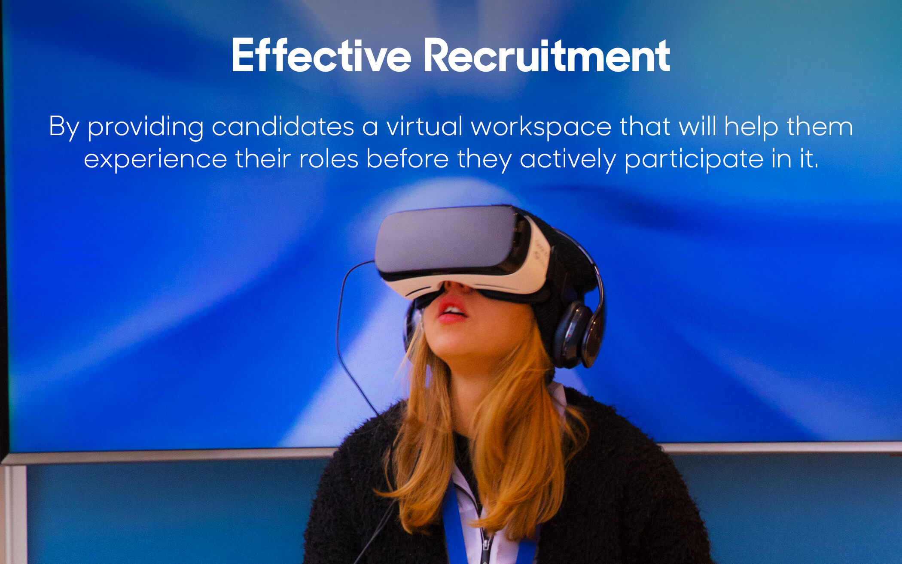

Future Scope and Aspects
From educational applications to 3D Simulations, from day-to-day routines to Supercomputing, discover the future aspects and unleash the power of virtual reality...
where everything is VIRTUALITY...
The virtual environments and computer graphics group's research spans the range from real-time computer graphics rendering to human factors issues in virtual reality. A common theme is to understand how to make virtual reality effective and how it is solving REAL-WORLD problems. Carrying out experiments with participants, in order to examine just what makes a difference to their sense of presence in the virtual environment, and their sense of co-presence with other people. The popular research issues and elegant solutions to the complex problems include issues involved in populating our virtual envirornments such as healthcare, education and more.
From educational applications to 3D Simulations, from day-to-day routines to Supercomputing, discover the future aspects and unleash the power of virtual reality...
How Computer Graphics Started? Will the impact of VECG affect us postively or negatively? Who are the important people to know about and to talk to about VECG? Find evertything about History, Impact and Overview here...
UCL Computer Science (CS) is the leading research department in the subject area in the UK. View the research papers and conferences taking place to INNOVATE with knowledge[1].
Excited about the virtuality? Head-start your career in Virtual Environments with this simple,sophesticated and FREE online course on EDX and unleash the power of the virtual world![2]
Discover the insight on virtual reality as the crazy examples unveil...[3]
As augmented reality,mixed reality has a bright future in healthcare. HoloLens opens up radically new ways for medical education as it is able to project the human body in its full size in front of med students. Thus, the organs, veins or bones will be visible accurately in 3D, and future medical professionals will be able to analyze their shape, remember their characteristics more vividly than it is possible when studying from a book. There are already some universities who plan to introduce the new technology: Case Western opens its new health education campus in collaboration with the Cleveland Clinic in 2019, where students won’t learn anatomy from cadavers either, they’ll learn it from virtual reality.[4]

The Logitech Bridge system utilises a single Vive Tracker, attached to the top corner of a Logitech G gaming keyboard. Through its many sensors, the tracker allows you to experience a natural typing experience all from within a virtual space. Once in a virtual space, you will be greeted by a true-to-life overlay of your keyboard, fully-customisable in its appearance via the provided SDK. These options range from bigger key text, changing the board’s colour scheme, or, of the largest interest to gamers, shortcuts that appear and adapt dependent on the events occurring in-game, or the game itself.[5]
A fully immersive virtual environment where animals can move freely is not the farfetched idea it once was. With VR for freely moving animals, we can let the animal experience its own natural sense of motion – feeling the stretch and strain of muscles as it walks forward and feeling the sensation of really turning – while still creating artificial visual worlds to do things like test spatial navigation. Despite the use of advanced technology, the setup is quite simple: it’s just an area where both the floor and the walls are flexible computer displays. Animals in this 3D environment can be tracked by multiple high-speed cameras and sensors, which means there is no need for animals to use special headgear as was the case in the past.[6]

Virtual reality training is conducted using head mounted displays (HMD) with an inbuilt tracking system and data gloves to enable interaction within the virtual environment. Another use is combat visualisation in which soldiers and other related personnel are given virtual reality glasses to wear which create a 3D depth of illusion. The results of this can be shared amongst large numbers of personnel. The military may not be an obvious candidate for virtual reality but it has been adopted by all branches – army, navy and air force. What the military stress is that virtual reality is designed to be used as an additional aid and will not replace real life training.[7]
Facial appearance depends on both the physical and physiological state of the skin. As people move, talk, undergo stress, and change expression, skin appearance is in constant flux. One of the key indicators of these changes is the color of skin. Skin color is determined by scattering and absorption of light within the skin layers, caused mostly by concentrations of two chromophores, melanin and hemoglobin. In this paper we present a real-time dynamic appearance model of skin built from in vivo measurements of melanin and hemoglobin concentrations. We demonstrate an efficient implementation of our method, and show that it adds negligible overhead to existing animation and rendering pipelines. Additionally, we develop a realistic, intuitive, and automatic control for skin color, which we term a skin appearance rig. This rig can easily be coupled with a traditional geometric facial animation rig. We demonstrate our method by augmenting digital facial performance with realistic appearance changes.[8]
"In the television show Star Trek, the crew of the USS Enterprise uses Holodeck, a smart virtual system, to create any solid person, vista or scenario based on whatever parameters are programmed into it. While the virtual room was mainly used for recreational purposes, it was also used for scientific simulation or even tactical training exercises."
While we are still a long way off in emulating a virtual reality where a few commands can create physical objects, current innovations in VR (Virtual Reality) have shown potential to solve problems in the real world.
To illustrate, VR is a computer technology that creates a simulated environment for a user. Unlike a typical user interface in which the user’s experiences externally, VR places the user right inside the experience itself. Think of it like replacing your entire reality with a virtual one which you can interact with by the help of VR systems.
By replacing our reality with a virtual one, it positions us better to understand real world problems and solve them. Here are some ways that show how:
For businesses that send employees off on the fields to work in hazardous conditions, safety is a top priority. However, accidents still happen and fatality rates in certain industries remain high. In dangerous worksites like oil rigs, for example, regular safety briefings and drills may keep workers aware of the potential dangers of their jobs but they still find themselves ill prepared to act when things really do turn out for the worst.
Unlike the real world, virtual reality is safe, which makes systems like VR headsets good solutions for safety training. Just as VR might let job seekers experience certain roles before they apply for them, it can also help prepare workers to act during dangerous situations or let them see how certain actions during particularly dangerous tasks might endanger others.
For example, some oil rig companies are introducing training programs where workers can see virtual versions of their worksites and play out safety procedures in simulated scenarios. Another example is a healthcare institution where medical practitioners are trained on procedures, like catheter insertions, in a VR lab. The training also involves placing students in virtual rooms where they make crucial and sensitive decisions about patients.

Getting the right people to fill advertised roles is a challenge which organizations face. Once confirmed, candidates start off a role pretty well only to figure out later that they either aren’t cut out for it or don’t find it challenging enough and leave. Premature resignations like these hurt a business’s retention efforts. It also wastes the time and resources it took to recruit and train these employees.
Businesses use various ways to make employees stay for the long term like healthcare benefits and onboarding programs; but these methods don’t always guarantee employee retention. Other reasons why may employees quit early include the following:
How can VR help in this regard? By providing promising candidates a virtual workspace that will help them experience their roles before they actively participate in it. In fact, some ventures have already taken this step. A German company, for example, uses a VR system to make job seekers experience the roles before they can apply for them. By giving candidates the chance to experience the jobs and the roles they are expected to play, businesses can become more competitive and prevent employees from resigning too early.
Visualizing environments helps us gain more insights like we were in those environments ourselves. Experiencing simulated versions of those environments works on an even deeper level. It brings us closer to these experiences and helps us gain deeper insights about them. This is because virtual environments provide a more immersive view as compared to an interface on a computer screen. And the more immersive the experience, the more definitive the insights gained from it.
By transporting users right in the middle of experiences, VR entirely changes the way we visualize and hence offers a lot of possibilities into its potential as a problem solving tool. For example, a homeowner who reaches out to an architect to build a house may use a VR headset, instead of a 3D model on a computer screen or a static blueprint, to see how proposed changes in a penthouse interior might look like once implemented. A notable car manufacturer also uses VR headsets to visualize short or tall drivers in driving simulations which gives engineers valuable insights into how the interior of vehicles should be designed.[9]